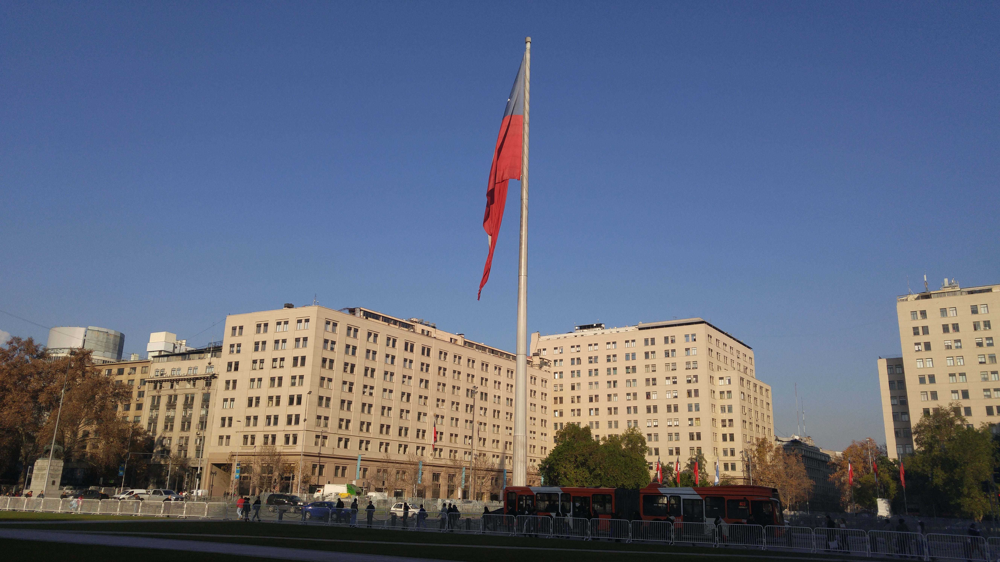
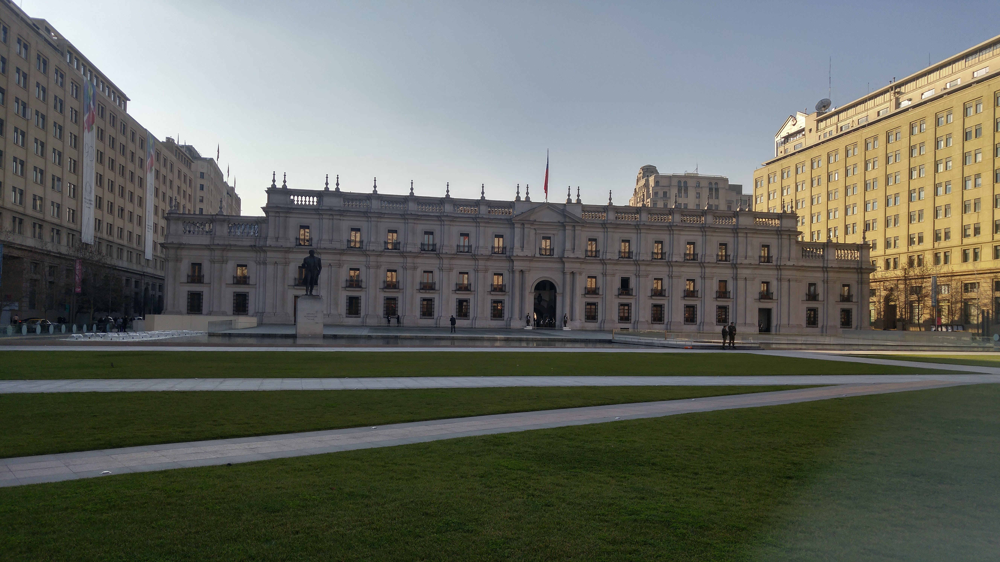
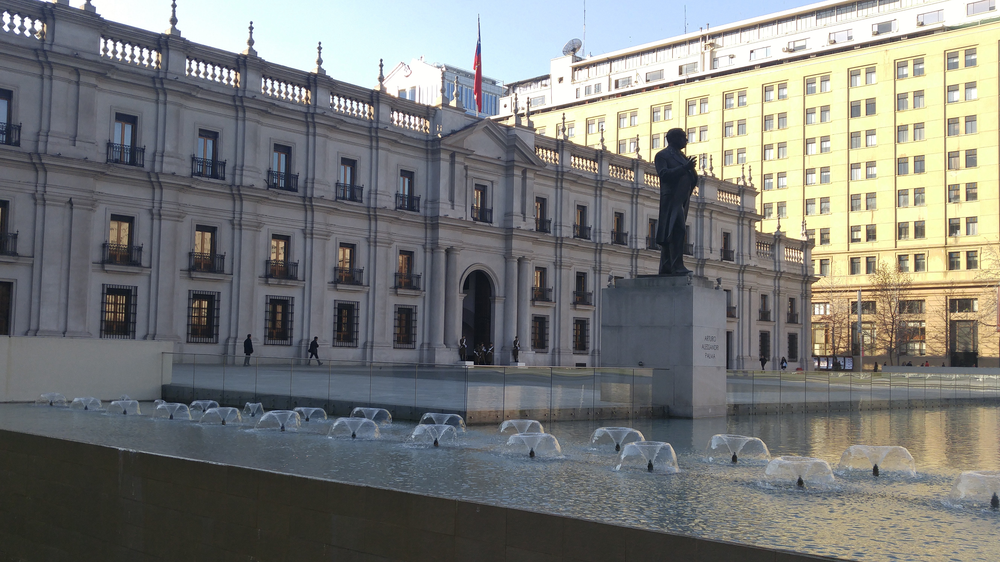
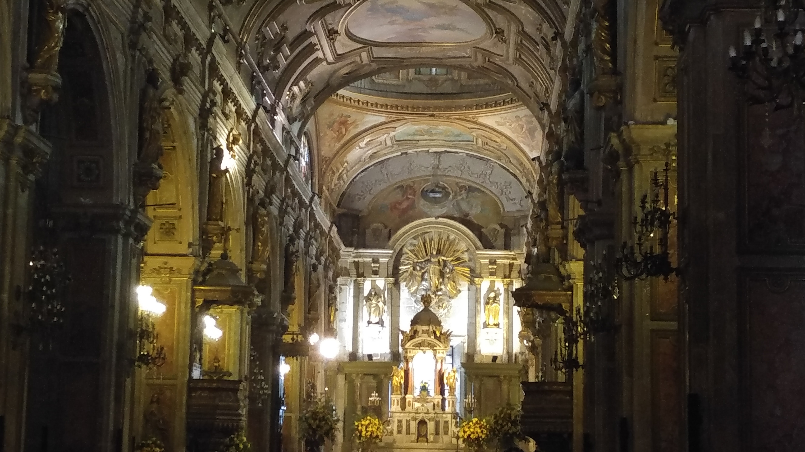
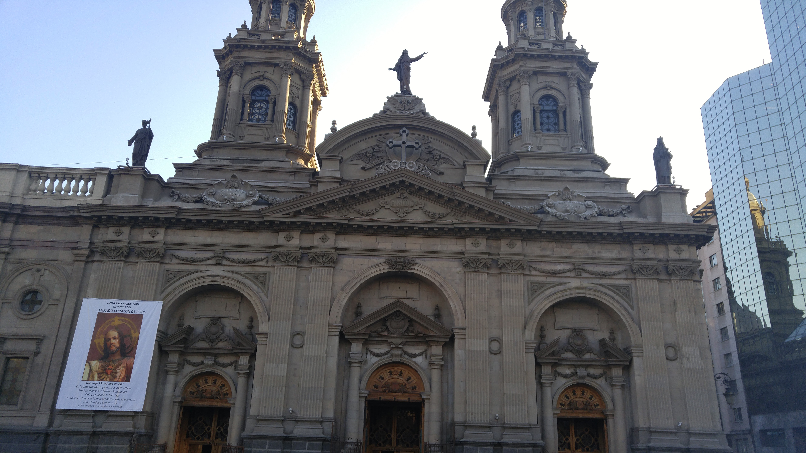
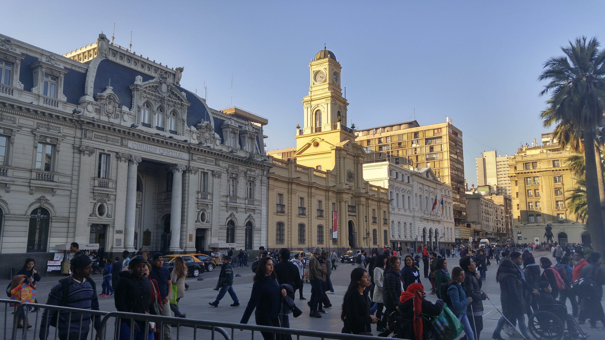
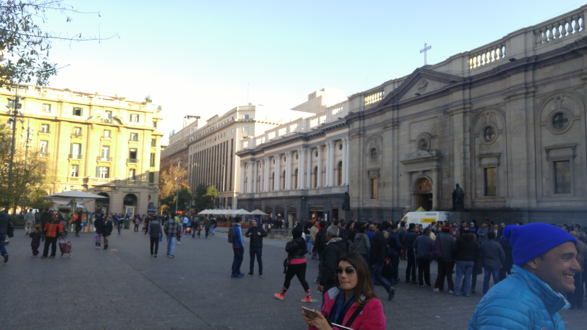
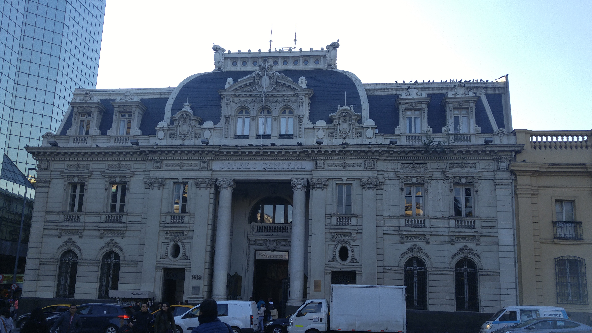
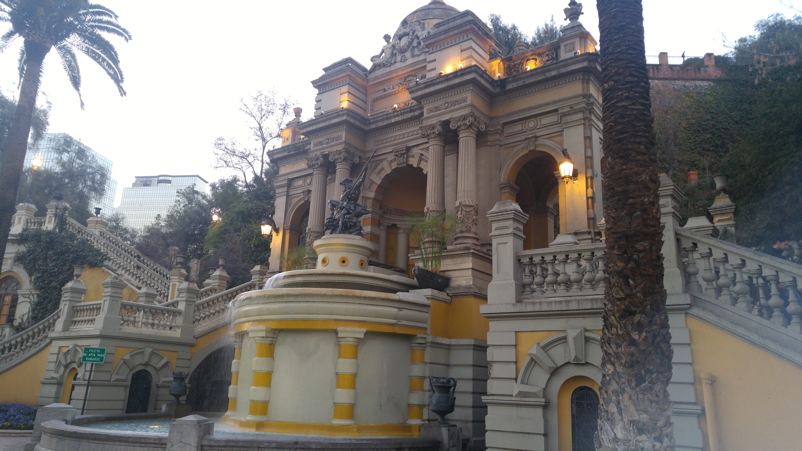

Things to do
La Moneda Palace is the seat of the president of Chile. It's a good place to begin exploring the downtown part of the city. It's an impressive building surrounded by some nice parks. You can stroll around, take some photos and maybe even see the changing of the guards (this happens once every two days).



Plaza de Armas is the main square in Santiago. It's easy to walk here from La Moneda Palace or there is also a metro station right under the plaza which you can arrive to by train. Surrounding the square are some historic buildings, including the Metropolitan Cathedral of Santiago, Central Post Office Building, Palacio de la Real Audiencia de Santiago, and the building that serves as the seat of local government for Santiago, which was formerly occupied by the Cabildo of the city before being remodeled. There are also other architecturally significant buildings that face the square, including the Capilla del Sagrario, the Palacio arzobispal, the Edificio Comercial Edwards, and the Portal Fernández Concha. It's a cool plaza full of vendors and art. Definitely worth stopping by if you are in Santiago!






Climbing Cerro Santa Lucia was probably my favourite thing that I did on my layover here. Also walking distance from the other attractions on my list Cerro Santa Lucia offers a nice hike up some well maintained gardens that leads to a fantastic view of the city with the towering mountains in the backdrop. There are monuments, waterfalls and some buildings on the hill that you will pass by on the way up. The hill is the remnant of a volcano 15 million years old.
